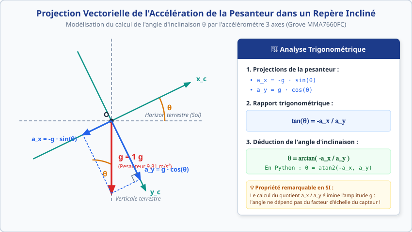

Niveau : Terminale SI / Spécialité SI
Durée conseillée : 3h30 à 4h00
Poste / Binôme : ..................
Évaluation : ..... / 20
Chaîne d'Information : Restitution Visuelle & IHM Embarquée
Bargraph LED Bar, Matrice 8×8 (Pictogrammes & Niveau à Bulle avec Accéléromètre 3 Axes) et Pilotage Joystick — MicroPython (Raspberry Pi Pico)
📌 Objectifs & Compétences du Programme de Terminale SI
- Compétence B2 / CO2.1 : Caractériser les échanges d'information entre composants (liaison série synchrone propriétaire 2 fils et bus normalisé I²C).
- Compétence B3 / CO2.4 : Modéliser et exploiter la projection vectorielle de la pesanteur dans un repère incliné pour déterminer un angle d'inclinaison (niveau à bulle / horizon artificiel).
- Compétence C1 / CO3.1 : Concevoir et implanter une structure algorithmique de restitution et d'acquisition en langage MicroPython sur microcontrôleur Raspberry Pi Pico (RP2040).
- Compétence C2 / CO3.2 : Mettre en œuvre une Interface Homme-Machine (IHM) adaptée aux contraintes d'exploitation (jauge analogique discrétisée, pictogrammes d'alerte, horizon artificiel et curseur interactif).
- Compétence D1 / CO4.1 : Exploiter la documentation technique constructeur pour configurer un périphérique numérique (recherche de l'adresse I²C, chronogrammes, registres de commande).
- Compétence D2 / CO4.2 : Valider expérimentalement le fonctionnement de la chaîne d'information complète : Acquérir (Capteurs) → Traiter (Pico RP2040) → Restituer (Afficheurs).
🧭 Contexte & Continuité avec le TP Précédent
Lors du TP précédent (Représentation & Modélisation des Mesures Physiques), vous avez :
- Conditionné une thermistance CTN 10 kΩ dans un pont diviseur de tension alimenté sous 3,3 V.
- Modélisé mathématiquement la loi de comportement thermique de la sonde (T = f(R) sous forme logarithmique ou polynomiale) avec un coefficient R² ≥ 0,98.
- Implanté ce modèle mathématique dans un programme MicroPython sur Raspberry Pi Pico afin de calculer et d'afficher la température en °C dans la console texte de Thonny.
Problématique d'Ingénierie : Dans un système autonome réel (armoire électrique industrielle, serre agricole régulée, couveuse néonatale ou centrale de traitement d'air), il n'y a pas d'ordinateur connecté en permanence. Le système doit communiquer son état à l'opérateur via des organes de restitution instantanés, intuitifs et visibles à distance :
- Un niveau quantitatif discrétisé : Un afficheur bargraph à 10 DELs (Grove LED Bar v2.0) dont la hauteur s'allume en proportion de la température.
- Un état qualitatif d'alerte : Une matrice à DELs 8×8 (Grove Red LED Matrix I²C) affichant des pictogrammes expressifs (icône Froid / Flocon, icône Confort / Smiley, icône Alerte / Flamme) pour alerter immédiatement en cas de dérive thermique.
Le microcontrôleur Raspberry Pi Pico échantillonne la tension analogique de la CTN, calcule la température en °C, puis pilote simultanément deux afficheurs numériques distincts à travers deux protocoles de communication série différents.
Partie 1 : Jauge Thermique avec le Grove LED Bar v2.0 (MY9221) Durée : 1h15
Le module Grove - LED Bar v2.0 est un composant d'affichage composé de 10 segments à DELs : 1 DEL rouge, 1 DEL jaune/orange, 1 DEL vert clair et 7 DELs vertes. Il est piloté par un circuit intégré spécialisé MY9221 (pilote de DELs à courant constant 12 canaux).
https://www.seeedstudio.com/Grove-LED-Bar-v2-0.html
1.1. Câblage Matériel du Module sur Raspberry Pi Pico
Contrairement à des composants analogiques ou I²C standards, le MY9221 utilise une liaison série synchrone propriétaire à 2 fils (horloge DCKI et données DI) :
• Broche Grove 1 (Fil Jaune) : DI (Data In) → Relier à la broche GP16 (broche physique 21)
• Broche Grove 2 (Fil Blanc) : DCKI (Clock In) → Relier à la broche GP17 (broche physique 22)
• Broche Grove 3 (Fil Rouge) : VCC (Alimentation) → Relier au 3V3 (Pin 36) ou 5V (VBUS Pin 40)
• Broche Grove 4 (Fil Noir) : GND (Masse) → Relier à un GND (Pin 18, 23 ou 38)
1.2. Principe de Fonctionnement du Contrôleur MY9221
Le circuit MY9221 contient un registre à décalage interne de 208 bits. À chaque impulsion sur la broche d'horloge DCKI, un bit présent sur la ligne DI est mémorisé. Une fois les données transmises (1 mot de commande + 12 canaux de luminosité), un signal spécifique appelé latch (maintien à 0 puis 4 impulsions consécutives sur DI) applique l'état aux DELs physiques.
1.3. Installation & Utilisation de la Bibliothèque Pilote my9221.py
Plutôt que de reprogrammer manuellement le protocole série bas niveau et le registre à décalage de 208 bits dans chaque script, nous allons utiliser en ingénierie une bibliothèque pilote (driver) éprouvée et modulaire : micropython-my9221.
📚 Interface de Programmation (API) de la Bibliothèque my9221
Une fois my9221.py présent sur la carte, vous disposez d'une classe très simple d'emploi :
from my9221 import MY9221: Importation du pilote.barre = MY9221(di=Pin(16), dcki=Pin(17), reverse=False): Instanciation de l'objet sur les broches matérielles. Le paramètrereverse=Truepermet d'inverser le sens de lecture si nécessaire.barre.level(val, brightness=255): Méthode principale de jauge. AllumevalDELs consécutives (avecvalentier de 0 à 10).barre.bits(masque, brightness=255): Allume individuellement les DELs selon un masque binaire (ex.0b1000000001pour allumer la première et la dernière).
1.4. Code de Base Fourni : Chenillard & Allumage des DELs une par une
Créez un nouveau fichier dans Thonny nommé test_led_bar_base.py. Vous remarquerez que le code est désormais beaucoup plus court et lisible grâce à l'importation de la bibliothèque :
# ==============================================================================
# TP TERMINALE SI — TEST DU GROVE LED BAR v2.0 (MY9221)
# Matériel : Raspberry Pi Pico + Grove LED Bar v2.0
# Prérequis : Le fichier my9221.py doit être téléversé sur la Pico !
# ==============================================================================
import time
from machine import Pin
from my9221 import MY9221
# 1. Initialisation du bargraph avec les broches DI (GP16) et DCKI (GP17)
barre = MY9221(di=Pin(16), dcki=Pin(17), reverse=False)
print("=== TEST DU GROVE LED BAR (LIBRAIRIE MY9221) : CHENILLARD ===")
# Boucle de démonstration : Allumage progressif de 0 à 10 DELs
while True:
print("\n--- Montée de la jauge (0 à 10 DELs) ---")
for nb_leds in range(11):
print(f"DELs allumées : {nb_leds} / 10")
barre.level(nb_leds) # Commande directe du nombre de DELs
time.sleep(0.3)
time.sleep(1.0)
print("--- Extinction complète ---")
barre.level(0)
time.sleep(0.8)Questions d'Analyse — Partie 1 :
Q1. Exécutez le script ci-dessus. Observez la disposition des couleurs des DELs lorsque nb_leds = 10. Quelle est la couleur de la première DEL allumée ? Quelle est la couleur de la 10e DEL ? Quel paramètre de l'instruction MY9221(...) permet d'inverser le sens d'allumage ?
Q2. Pourquoi le module Grove LED Bar nécessite-t-il un circuit spécialisé comme le MY9221 au lieu de relier directement les 10 DELs aux broches du microcontrôleur ? Justifiez en termes de nombre d'entrées/sorties (GPIO) et de courant électrique consommé.
1.5. Travail Demandé aux Élèves : Asservissement du Bargraph à la Température
Vous devez à présent modifier le programme afin que le nombre de DELs allumées reflète fidèlement la température mesurée par la CTN. On définit le cahier des charges d'affichage suivant pour une surveillance d'ambiance :
| Température mesurée T (°C) | Nombre de DELs à allumer | Segments visuels actifs | Signification industrielle |
|---|---|---|---|
| T < 16 °C | 0 DEL | Aucune DEL | Température anormalement basse / froid |
| 16 °C ≤ T < 18 °C | 1 à 2 DELs | Vertes (base) | Frais |
| 18 °C ≤ T ≤ 24 °C | 3 à 6 DELs | Vertes (zone centrale) | Zone de confort thermique optimale |
| 24 °C < T ≤ 28 °C | 7 à 8 DELs | Vert clair + Jaune/Orange | Avertissement réchauffement |
| T > 28 °C | 9 à 10 DELs | Orange + Rouge sommital | Surchauffe / Alerte critique |
def temperature_vers_niveau(temp_celsius, t_min=15.0, t_max=30.0):
"""
TODO ÉLÈVE : Calcule le nombre de DELs à allumer (entier de 0 à 10)
en effectuant une interpolation linéaire entre t_min et t_max.
- Si temp_celsius <= t_min -> retourne 0
- Si temp_celsius >= t_max -> retourne 10
- Entre les deux : échelonner proportionnellement sur 10 segments !
"""
if temp_celsius <= t_min:
return 0
elif temp_celsius >= t_max:
return 10
else:
# TODO : Formule de proportionnalité mathématique (arrondir à l'entier)
niveau = int(...)
return niveauQuestion d'Analyse :
Q3. Écrivez la relation mathématique exacte qui exprime niveau en fonction de temp_celsius, t_min et t_max. Validez votre formule en calculant à la main le niveau obtenu pour T = 22,5 °C avec Tmin = 15 °C et Tmax = 30 °C.
Partie 2 : Pictogrammes d'Alerte sur Matrice DEL 8×8 I²C (HT16K33) Durée : 1h30
Le composant Grove - Red LED Matrix w/Driver associe une matrice carrée de 64 DELs rouges (8 × 8) à un contrôleur spécialisé Holtek HT16K33 communiquant via le bus I²C.
https://wiki.seeedstudio.com/Grove-Red_LED_Matrix_w_Driver/
Consultez impérativement cette page pour répondre aux questions de recherche documentaire ci-après !
2.1. Recherche Documentaire & Configuration du Bus I²C (Mission Élève)
Sur un bus I²C, chaque composant esclave (slave) doit posséder une adresse matérielle unique sur 7 bits pour être reconnu et piloté par le microcontrôleur maître (Raspberry Pi Pico).
Mission Documentaire — Analyse du Wiki Constructeur :
Q4. En explorant le wiki officiel du produit (tableau des spécifications et section I²C Address) :
- Quelle est la tension d'alimentation admissible (Supply Voltage) du module ?
- Quelle est l'adresse I²C par défaut (default I²C address) du module en sortie d'usine ? Exprimez-la en notation hexadécimale.
- Combien d'adresses I²C différentes peut-on attribuer à ce module au maximum ?
- Comment modifie-t-on physiquement cette adresse sur le circuit imprimé (observez les cavaliers/pads à souder A0, A1, A2 au dos du module) ? Donnez l'état des cavaliers pour obtenir l'adresse
0x73.
2.2. Câblage Matériel & Détection par Scanner I²C
Le module se raccorde sur le port I²C(0) de la Raspberry Pi Pico :
• Broche Grove 1 (Fil Jaune) : SCL (Horloge I²C) → Relier à la broche GP9 (I2C0 SCL, broche physique 12)
• Broche Grove 2 (Fil Blanc) : SDA (Données I²C) → Relier à la broche GP8 (I2C0 SDA, broche physique 11)
• Broche Grove 3 (Fil Rouge) : VCC → Relier à 3V3 (Pin 36) ou 5V (VBUS)
• Broche Grove 4 (Fil Noir) : GND → Relier à un GND
Avant de tenter d'afficher quoi que ce soit, validons la présence matérielle du composant en exécutant le script de détection Scanner I²C ci-dessous dans Thonny :
# ==============================================================================
# SCRIPT DE RECHERCHE D'ADRESSES SUR LE BUS I2C (RASPBERRY PI PICO)
# Broches : GP8 (SDA) | GP9 (SCL) sur I2C(0)
# ==============================================================================
from machine import Pin, I2C
# Initialisation du bus I2C(0) à 100 kHz
i2c = I2C(0, scl=Pin(9), sda=Pin(8), freq=100000)
print("Scan du bus I2C en cours...")
peripheriques = i2c.scan()
if peripheriques:
print(f"Périphérique(s) I2C détecté(s) : {len(peripheriques)}")
for adresse in peripheriques:
print(f" -> Adresse décimale : {adresse} | Adresse hexadécimale : {hex(adresse)}")
else:
print("❌ Aucun périphérique I2C détecté !")
print("Vérifiez vos 4 fils : SDA (GP8), SCL (GP9), 3V3 et GND.")Question d'Analyse :
Q5. Exécutez le script scan_i2c_pico.py. Quelle adresse hexadécimale s'affiche sur la console Thonny ? Correspond-elle bien à l'adresse relevée dans la documentation à la question Q4 ? Que se passe-t-il si vous débranchez le fil jaune (SCL) et relancez le scan ?
2.3. Structure des Registres et Pilotage du Contrôleur HT16K33
Le circuit intégré HT16K33 nécessite une séquence d'initialisation précise via le bus I²C :
- 0x21 : Allumage de l'oscillateur interne système (System setup register → Normal operation).
- 0x81 : Activation de l'affichage sans clignotement (Display setup → Display ON, Blinking OFF).
- 0xE0 à 0xEF : Réglage de la luminosité (Dimming register, 16 niveaux de 0 à 15).
- Mémoire d'affichage (Display RAM) : La mémoire interne contient 16 octets débutant à l'adresse
0x00. Pour une matrice 8 × 8, chaque ligne i (de 0 à 7) est stockée à l'octet pair2 * i(les octets impairs ne sont pas connectés).
2.4. Code de Base Fourni : Allumage d'une Diagonale de DELs
Voici le script de base fourni. Ce code allume précisément les 8 DELs formant la diagonale principale de la matrice :
# ==============================================================================
# TP TERMINALE SI — PILOTAGE DE LA MATRICE DEL 8x8 GROVE (HT16K33)
# Broches : GP8 (SDA) | GP9 (SCL) | VCC -> 3V3 | GND -> GND
# ==============================================================================
import time
from machine import Pin, I2C
class GroveMatrixHT16K33:
"""Pilote MicroPython autonome pour la matrice à DEL 8x8 Grove (HT16K33)"""
def __init__(self, bus_i2c, address=0x70):
self.i2c = bus_i2c
self.address = address
self.init_hardware()
def init_hardware(self):
"""Séquence d'initialisation matérielle du HT16K33"""
# 1. Démarrer l'oscillateur interne
self.i2c.writeto(self.address, b'\x21')
# 2. Allumer l'affichage (Display ON, Clignotement désactivé)
self.i2c.writeto(self.address, b'\x81')
# 3. Luminosité intermédiaire (niveau 7 sur 15)
self.set_brightness(7)
# 4. Effacer l'affichage initial
self.clear()
def set_brightness(self, level):
"""Règle la luminosité de 0 (très faible) à 15 (maximale)"""
level = max(0, min(15, int(level)))
self.i2c.writeto(self.address, bytes([0xE0 | level]))
def clear(self):
"""Éteint toutes les DELs de la matrice"""
self.show([0x00] * 8)
def show(self, pattern_8_lignes):
"""
Affiche un motif 8x8 défini par une liste de 8 octets.
Chaque octet contrôle l'état des 8 DELs d'une ligne (1 = Allumée, 0 = Éteinte).
"""
# Trame I2C : registre 0x00 suivi des 16 octets du buffer d'affichage
buffer = bytearray(17)
buffer[0] = 0x00 # Adresse mémoire initiale du contrôleur
for i in range(8):
buffer[1 + 2 * i] = pattern_8_lignes[i] # Donnée de la ligne i
buffer[2 + 2 * i] = 0x00 # Octet haut non utilisé
self.i2c.writeto(self.address, buffer)
# ------------------------------------------------------------------------------
# PROGRAMME DE BASE FOURNI : ALLUMAGE D'UNE DIAGONALE DE DELs
# ------------------------------------------------------------------------------
# 1. Initialisation de la liaison I2C(0)
i2c = I2C(0, scl=Pin(9), sda=Pin(8), freq=100000)
# 2. Définition de l'adresse I2C (relevée à la question Q4 / Q5)
ADRESSE_MATRICE = 0x70 # Modifiez cette valeur si votre scan a révélé 0x77
# 3. Création de l'objet matrice
matrice = GroveMatrixHT16K33(i2c, address=ADRESSE_MATRICE)
print("=== TEST MATRICE 8x8 : ALLUMAGE DE LA DIAGONALE PRINCIPALE ===")
# Motif de test : 1 DEL allumée par ligne (décalée d'un bit à chaque ligne)
# Notations binaires 0b : bit à 1 = DEL allumée, bit à 0 = DEL éteinte
DIAGONALE = [
0b10000000, # Ligne 0 : bit 7 allumé (DEL en haut à gauche)
0b01000000, # Ligne 1 : bit 6 allumé
0b00100000, # Ligne 2 : bit 5 allumé
0b00010000, # Ligne 3 : bit 4 allumé
0b00001000, # Ligne 4 : bit 3 allumé
0b00000100, # Ligne 5 : bit 2 allumé
0b00000010, # Ligne 6 : bit 1 allumé
0b00000001 # Ligne 7 : bit 0 allumé (DEL en bas à droite)
]
# Affichage du motif
matrice.show(DIAGONALE)
print("Diagonale affichée avec succès !")Questions d'Analyse :
Q6. Exécutez le script. Observez la diagonale affichée. En déduire le rôle de chaque bit dans un octet de ligne. Comment s'écrirait la liste de 8 octets pour afficher la seconde diagonale (antidiagonale) allant du coin haut-droit au coin bas-gauche ?
Q7. Comment s'écrirait le motif pour afficher une croix complète (X) combinant les deux diagonales ?
2.5. Conception des Pictogrammes avec LED Matrix Editor
Pour dessiner facilement des icônes complexes et expressives sans calculer manuellement chaque octet, vous utiliserez l'outil en ligne LED Matrix Editor :
https://xantorohara.github.io/led-matrix-editor/
🛠️ Guide d'Utilisation de LED Matrix Editor
- 1. Dans le sélecteur en haut à droite, choisissez la couleur Red.
- 2. Cliquez sur les cases de la grille 8 × 8 pour allumer ou éteindre les DELs et former votre dessin.
- 3. Pour récupérer le code :
- Dans le menu déroulant de génération, sélectionnez Arduino (byte array).
- Copiez la liste des 8 valeurs (ex :
{ B00111100, B01000010, ... }ou en hexadécimal).
- 4. Dans votre code MicroPython, collez simplement ces 8 valeurs sous forme d'une liste Python :
[0x3C, 0x42, ...]ou[0b00111100, ...].
# Exemple 1 : Flocon / Étoile (Température Froide)
ICONE_FROID = [
0b00011000,
0b10011001,
0b01011010,
0b00111100,
0b00111100,
0b01011010,
0b10011001,
0b00011000
]
# Exemple 2 : Smiley Souriant (Température de Confort Idéale)
ICONE_CONFORT = [
0b00111100, # . . # # # # . .
0b01000010, # . # . . . . # .
0b10100101, # # . # . . # . # (Yeux)
0b10000001, # # . . . . . . #
0b10100101, # # . # . . # . # (Sourire)
0b10011001, # # . . # # . . #
0b01000010, # . # . . . . # .
0b00111100 # . . # # # # . .
]
# Exemple 3 : Flamme / Alerte Surchauffe (Température Élevée)
ICONE_CHAUD = [
0b00010000,
0b00011000,
0b00111100,
0b01101110,
0b01111110,
0b01111110,
0b00111100,
0b00011000
]Questions d'Analyse :
Q8. Dessinez vos 3 pictogrammes sur l'éditeur en ligne. Relevez ci-dessous la liste des 8 octets de chaque motif (en hexadécimal ou en binaire). Justifiez le choix graphique de vos pictogrammes du point de vue de l'expérience utilisateur et de la lisibilité à distance.
Q9. Testez l'affichage successif de vos 3 icônes sur la matrice avec une temporisation de 1,5 seconde entre chaque image dans une boucle de test.
Partie 3 : Défi d'Ingénierie — Station de Surveillance Thermique Autonome Durée : 1h00
Vous allez maintenant fusionner l'ensemble des modules dans un programme principal complet (main.py). La station doit fonctionner de manière 100 % autonome dès la mise sous tension de la carte :
- Lire la tension du pont diviseur CTN 10 kΩ sur l'entrée analogique
GP26 / ADC0. - Calculer la résistance Rctn et en déduire la température réelle T en °C à l'aide de l'équation logarithmique déterminée lors du TP précédent :
T = a × ln(R_ctn) + b (ou modèle polynomial). - Mettre à jour le Grove LED Bar avec le nombre de DELs proportionnel à la température.
- Mettre à jour la Matrice DEL 8×8 avec le pictogramme d'état approprié (Froid, Confort ou Alerte).
- Afficher simultanément les valeurs mesurées sur la console série (pour diagnostic) et cadencer la boucle à une période d'échantillonnage de 1 seconde.
# ==============================================================================
# TP TERMINALE SI — STATION DE SURVEILLANCE THERMIQUE COMPLÈTE
# Acquérir : CTN 10 kΩ (GP26) | Traiter : Pico RP2040
# Restituer : Grove LED Bar (GP16/17) + Matrice DEL 8x8 I2C (GP8/9)
# ==============================================================================
import time
import math
from machine import Pin, ADC, I2C
from my9221 import MY9221 # Bibliothèque du Grove LED Bar (my9221.py)
# ------------------------------------------------------------------------------
# 1. CONSTANTES & ÉTALONNAGE CTN 10 kΩ (RELEVÉ DU TP PRÉCÉDENT)
# ------------------------------------------------------------------------------
VREF = 3.3 # Tension de référence CAN (V)
PLEINE_ECHELLE = 65535 # Résolution 16 bits MicroPython
R_FIXE = 10000.0 # Résistance fixe du pont diviseur (10 kΩ)
# TODO ÉLÈVE : Insérez les coefficients a et b obtenus lors du TP modélisation
# Modèle Logarithmique : T = a * ln(R) + b
COEFF_A = -21.5 # <-- À REMPLACER par votre coefficient 'a'
COEFF_B = 223.4 # <-- À REMPLACER par votre coefficient 'b'
# ------------------------------------------------------------------------------
# 2. INITIALISATION MATÉRIELLE DES PÉRIPHÉRIQUES
# ------------------------------------------------------------------------------
# Entrée analogique CTN
adc_ctn = ADC(Pin(26))
# Bargraph Grove LED Bar (MY9221 via la bibliothèque externe)
barre = MY9221(di=Pin(16), dcki=Pin(17), reverse=False)
# Matrice DEL 8x8 (HT16K33)
i2c = I2C(0, scl=Pin(9), sda=Pin(8), freq=100000)
# (Insérez ici la classe GroveMatrixHT16K33 définie en Partie 2)
matrice = GroveMatrixHT16K33(i2c, address=0x70)
# Définition des motifs d'icônes conçus par l'élève
ICONE_FROID = [ ... ] # <-- Vos 8 octets
ICONE_CONFORT = [ ... ] # <-- Vos 8 octets
ICONE_CHAUD = [ ... ] # <-- Vos 8 octets
# ------------------------------------------------------------------------------
# 3. FONCTIONS DE TRAITEMENT ET DE RESTITUTION
# ------------------------------------------------------------------------------
def lire_temperature():
"""Acquiert la tension, calcule la résistance CTN et retourne la température en °C"""
val_brute = adc_ctn.read_u16()
u_mes = val_brute * (VREF / PLEINE_ECHELLE)
if u_mes > 0.05:
r_ctn = R_FIXE * ((VREF / u_mes) - 1.0)
# TODO : Appliquer la formule de régression logarithmique
temperature = COEFF_A * math.log(r_ctn) + COEFF_B
return u_mes, r_ctn, temperature
else:
return u_mes, 0.0, -99.0
# ------------------------------------------------------------------------------
# 4. BOUCLE PRINCIPALE DE RÉGULATION & DE RESTITUTION VISUELLE
# ------------------------------------------------------------------------------
print("=== DÉMARRAGE DE LA STATION DE SURVEILLANCE THERMIQUE ===")
while True:
u_mes, r_ctn, temp = lire_temperature()
# 1. Calcul du niveau pour la jauge LED Bar (0 à 10 segments)
niveau_leds = temperature_vers_niveau(temp, t_min=16.0, t_max=28.0)
barre.level(niveau_leds) # Pilotage direct du niveau via my9221
# 2. Sélection et affichage de l'icône sur la matrice 8x8
if temp < 18.0:
matrice.show(ICONE_FROID)
etat = "FROID"
elif temp <= 24.0:
matrice.show(ICONE_CONFORT)
etat = "CONFORT"
else:
matrice.show(ICONE_CHAUD)
etat = "ALERTE CHAUD"
# 3. Message de contrôle sur la console
print(f"U = {u_mes:.2f} V | R = {r_ctn:6.0f} Ω | T = {temp:5.1f} °C | Jauge : {niveau_leds}/10 | État : {etat}")
# Cadencement temporel
time.sleep(1.0)Validation Expérimentale & Questions de Synthèse :
Q10. Test en direct : Faites chauffer la sonde CTN en la serrant fermement entre vos doigts pendant 20 secondes. Observez l'évolution conjointe du bargraph et de la matrice à DELs. Relevez la température maximale atteinte et décrivez les transitions observées.
Q11. Analyse comparative des liaisons série : Complétez le tableau comparatif ci-dessous pour synthétiser les différences entre les deux technologies de communication mises en œuvre :
| Critère de comparaison | Grove LED Bar (MY9221) | Grove Red LED Matrix (HT16K33) |
|---|---|---|
| Type de bus / protocole | Série synchrone propriétaire 2 fils | Bus normalisé I²C (Inter-Integrated Circuit) |
| Nombre de lignes de signaux | 2 fils (DI + DCKI) | 2 fils (SDA + SCL) |
| Adressage des périphériques | ... (Possible ou impossible ?) | ... (Oui / Non ? De 0x... à 0x...) |
| Partage des broches avec d'autres capteurs | ... | ... |
| Débit & Synchronisation | Bit-banging manuel par programme | Horloge matérielle cadencée (100 à 400 kHz) |
| Nature de l'information restituée | Quantitatif discrétisé (Niveau / Jauge 0-10) | Qualitatif & Symbolique (Graphisme 64 pixels) |
Partie 4 : Niveau à Bulle Électronique & Horizon Artificiel (Accéléromètre 3 Axes) Durée : 1h00 (Étude Théorique & Modélisation)
Dans de nombreux systèmes embarqués (drones, smartphones, engins de chantier ou outillage laser de précision pour le BTP), la matrice d'affichage est solidaire d'un boîtier mobile. On souhaite créer un niveau à bulle électronique (ou horizon artificiel) : la ligne lumineuse affichée sur la matrice doit paraître constamment horizontale dans le monde réel par rapport au sol terrestre, même lorsque l'opérateur incline physiquement la matrice dans ses mains !
L'inclinaison de la matrice est mesurée en continu par un capteur accélérométrique fixé mécaniquement à son dos : le Grove - 3-Axis Digital Accelerometer (±1.5g) basé sur le composant numérique Freescale MMA7660FC.
https://wiki.seeedstudio.com/Grove-3-Axis_Digital_Accelerometer-1.5g/
Ce composant communique également sur le bus I²C (adresse
0x4C) et mesure les accélérations selon 3 axes orthogonaux (x, y, z).
4.1. Modélisation Vectorielle : Mesure de l'Inclinaison par la Pesanteur
Dans un état statique ou quasi-statique (vitesse de déplacement faible sans accélération dynamique violente), le capteur ne subit que l'accélération de la pesanteur terrestre g⃗, dirigée selon la verticale descendante locale (g ≈ 9,81 m/s², soit 1 g).
Lorsque la matrice et son accéléromètre sont inclinés d'un angle θ (angle de roulis) par rapport à l'horizontale, le repère orthonormé lié au capteur (O, x⃗c, y⃗c) tourne de cet angle θ. Le vecteur fixe g⃗ se projette alors sur les axes sensibles internes de l'accéléromètre :

Figure 1 : Projection vectorielle de l'accélération de la pesanteur g⃗ dans le repère (O, x⃗c, y⃗c) incliné de l'angle θ. Les composantes mesurées par le capteur sont ax = −g · sin(θ) et ay = g · cos(θ).
📐 Démonstration Mathématique du Calcul de l'Angle θ
En observant le triangle rectangle formé par le vecteur pesanteur g⃗ et ses deux projections orthogonales :
- Composante sur l'axe transverse x⃗c : ax = −g · sin(θ)
- Composante sur l'axe longitudinal y⃗c : ay = g · cos(θ)
En calculant le quotient membre à membre de ces deux projections :
On en déduit l'expression de l'angle d'inclinaison θ :
💡 Avantage majeur en ingénierie : L'accélération g s'élimine naturellement dans le quotient ! La mesure d'angle θ est ainsi insensible aux variations d'échelle ou d'étalonnage absolu du capteur, ce qui confère au système une robustesse exemplaire.
4.2. Principe du Niveau à Bulle & Horizon Artificiel sur la Matrice 8×8
L'accéléromètre est solidaire du dos de la matrice à DELs. Si l'utilisateur fait pivoter physiquement le boîtier d'un angle +θ dans le sens trigonométrique :
- L'accéléromètre mesure instantanément les accélérations ax et ay et le microcontrôleur calcule l'angle d'inclinaison physique θ.
- Pour que la ligne de DELs allumées reste parfaitement horizontale aux yeux d'un observateur terrestre, le programme doit tracer sur la matrice une ligne inclinée d'un angle opposé −θ dans le repère propre de l'afficheur !

Figure 2 : Principe de compensation de l'horizon artificiel. Quel que soit le roulis imposé à la matrice physique, la ligne rouge formée par les DELs allumées reste parallèle à l'horizon terrestre réel.
Questions d'Ingénierie & Analyse Algorithmique — Partie 4 :
(Rappel : Vous ne devez pas coder cette partie sur la Pico, mais mener la démarche d'analyse et concevoir l'algorithme sous forme d'équations et d'organigramme).
Q12. On repère chaque DEL de la matrice par ses coordonnées entières (x, y) ∈ {0, 1, …, 7}², le centre géométrique de la matrice étant le point (x0, y0) = (3,5 ; 3,5). Établissez l'équation cartésienne de la droite de pente m = −tan(θ) passant par ce centre : y − y0 = m · (x − x0).
Q13. La matrice étant discrète (8 rangées de DELs physiques), comment calcule-t-on le numéro de ligne entier yDEL(x) à allumer pour chaque colonne x ∈ {0, 1, …, 7} ? Que doit faire l'algorithme si la valeur calculée y sort de l'intervalle [0 ; 7] (par exemple pour une forte inclinaison θ = 60°) ?
Q14. Rédigez en français ou sous forme d'organigramme (pseudo-code) l'algorithme complet de la boucle d'asservissement d'horizon artificiel : Lecture I²C MMA7660 → Calcul de θ → Calcul des 8 octets de la matrice → Rafraîchissement I²C HT16K33.
Partie 5 : Pilotage Interactif d'un Pixel par Joystick Analogique (Grove Thumb Joystick) Durée : 45 min
Pour enrichir l'Interface Homme-Machine (IHM) et permettre à un opérateur de sélectionner une consigne, de déplacer un curseur ou de naviguer dans un menu graphique sur la matrice, on intègre un module de commande analogique bidirectionnel : le Grove - Thumb Joystick.
https://wiki.seeedstudio.com/Grove-Thumb_Joystick/
5.1. Fonctionnement Matériel du Joystick & Câblage Pico
Le Thumb Joystick Grove intègre deux potentiomètres de 10 kΩ montés orthogonalement (axe X et axe Y). Lorsqu'on incline le manche, les curseurs des deux potentiomètres se déplacent et délivrent deux tensions analogiques continues UX et UY comprises entre 0 V et VCC (3,3 V). Au repos (manche au centre), les deux tensions sont centrées autour de VCC / 2 ≈ 1,65 V.
Figure 3 : Chaîne d'information du contrôle de pixel : Joystick (CAN0 GP26 & CAN1 GP27) → Traitement MicroPython → Affichage dynamique du pixel actif sur la matrice DEL 8×8 via I²C.
• Fil Jaune (Sortie Analogique Axe X) → Relier à GP26 (ADC0) (broche physique 31)
• Fil Blanc (Sortie Analogique Axe Y) → Relier à GP27 (ADC1) (broche physique 32)
• Fil Rouge (Alimentation VCC) → Relier au 3V3 (Pin 36)
• Fil Noir (Masse GND) → Relier à un GND
5.2. Code MicroPython Fourni : Déplacement Temps Réel du Pixel Lumineux
Voici le programme complet permettant de piloter en direct la position du pixel lumineux sur la matrice 8×8 en fonction de la position du joystick. Ouvrez un nouveau script dans Thonny nommé joystick_matrice_pixel.py :
# ==============================================================================
# TP TERMINALE SI — PILOTAGE D'UN PIXEL PAR JOYSTICK ANALOGIQUE SUR MATRICE 8x8
# Entrées : Joystick Axe X sur GP26 (ADC0) | Axe Y sur GP27 (ADC1)
# Sortie : Matrice DEL 8x8 Grove HT16K33 sur I2C(0) GP8/GP9
# ==============================================================================
import time
from machine import Pin, ADC, I2C
# 1. Configuration des entrées analogiques du Joystick
adc_x = ADC(Pin(26)) # Tensions de 0 à 3,3 V (valeur numérique 0 à 65535)
adc_y = ADC(Pin(27))
# 2. Configuration du bus I2C et de la matrice DEL 8x8
i2c = I2C(0, scl=Pin(9), sda=Pin(8), freq=100000)
ADRESSE_MATRICE = 0x70
# Initialisation du contrôleur HT16K33
i2c.writeto(ADRESSE_MATRICE, b'\x21') # Allumage oscillateur
i2c.writeto(ADRESSE_MATRICE, b'\x81') # Affichage ON
i2c.writeto(ADRESSE_MATRICE, bytes([0xE0 | 7])) # Luminosité moyenne
def afficher_pixel(colonne, ligne):
"""
Allume un unique pixel lumineux aux coordonnées (colonne, ligne) sur la matrice 8x8.
- colonne : entier entre 0 (gauche) et 7 (droite)
- ligne : entier entre 0 (haut) et 7 (bas)
"""
buffer = bytearray(17)
buffer[0] = 0x00 # Pointeur registre mémoire RAM
# Construction du motif : seule la ligne ciblée a un bit allumé
for i in range(8):
if i == ligne:
# Allumer le bit correspondant à la colonne (bit 7 = gauche, bit 0 = droite)
buffer[1 + 2 * i] = (1 << (7 - colonne))
else:
buffer[1 + 2 * i] = 0x00
buffer[2 + 2 * i] = 0x00
i2c.writeto(ADRESSE_MATRICE, buffer)
print("=== PILOTAGE JOYSTICK -> PIXEL MATRICE 8x8 ACTIF ===")
print("Inclinez le joystick pour déplacer le point lumineux...")
while True:
# 1. Lecture des valeurs analogiques brutes 16 bits (0 à 65535)
val_x = adc_x.read_u16()
val_y = adc_y.read_u16()
# 2. Discrétisation spatiale sur 8 colonnes (0 à 7) et 8 lignes (0 à 7)
# Formule de mapping : val * 8 // 65536 donne un entier de 0 à 7
col = min(7, max(0, val_x * 8 // 65536))
lig = min(7, max(0, val_y * 8 // 65536))
# Optionnel : Inverser le sens vertical si le joystick monte quand lig descend
# lig = 7 - lig
# 3. Mise à jour instantanée de l'afficheur
afficher_pixel(col, lig)
# Petite temporisation pour fluidifier l'affichage (environ 30 rafraîchissements / s)
time.sleep_ms(30)Questions d'Analyse — Partie 5 :
Q15. Exécutez le script ci-dessus. Déplacez le manche du joystick et observez la réactivité du pixel. Que constatez-vous lorsque le manche est au repos ? Y a-t-il des micro-oscillations ou hésitations du pixel entre deux DELs adjacentes ? Expliquez ce phénomène lié au bruit de mesure du convertisseur analogique-numérique.
Q16 (Défi d'Approfondissement). Dans un jeu vidéo (type Snake ou curseur de sélection), le joystick ne commande pas la position absolue du pixel, mais sa vitesse de déplacement :
- Si le manche est au centre (zone morte, par exemple 28000 ≤ N ≤ 37000), le pixel reste immobile à sa position actuelle.
- Si le manche est poussé vers la droite (NX > 50000), le pixel se décale d'une case vers la droite à chaque pas de temps.
Modifiez le script pour implémenter ce mode curseur mobile incrémental avec gestion de zone morte.
Grille d'Évaluation des Compétences (20 Points)
| Compétences & Domaines Évalués | Indicateurs de Réussite & Critères d'Évaluation | Barème |
|---|---|---|
| 1. Câblage matériel & Sécurité électrique | Raccordements corrects des 4 périphériques sur la Raspberry Pi Pico (CTN, LED Bar, Matrice 8×8, Joystick) sans faux contact ni court-circuit. | / 3 pts |
| 2. Maîtrise du Grove LED Bar (MY9221) | Compréhension de la liaison 2 fils série, test du chenillard réussi, formule d'interpolation linéaire temperature_vers_niveau fonctionnelle. |
/ 3 pts |
| 3. Recherche documentaire I²C & Matrice 8×8 | Recherche efficace sur le wiki Seeed Studio, identification de l'adresse 0x70, utilisation de LED Matrix Editor pour créer les 3 pictogrammes. | / 4 pts |
| 4. Station de surveillance thermique intégrée | Fonctionnement autonome de la station complète, affichage simultané de la jauge et de l'icône, validation de la réactivité au contact thermique. | / 3 pts |
| 5. Modélisation Niveau à Bulle & Horizon Artificiel | Analyse vectorielle de la pesanteur g⃗, justification rigoureuse de la formule θ = arctan(−ax / ay), équation de compensation de la ligne de DELs. | / 4 pts |
| 6. Pilotage du pixel par Joystick (IHM) | Acquisition analogique 2 voies ADC, discrétisation spatiale sur 8×8, réactivité temps réel et analyse du filtrage de zone morte. | / 3 pts |
| NOTE GLOBALE DU TP : | / 20 pts | |